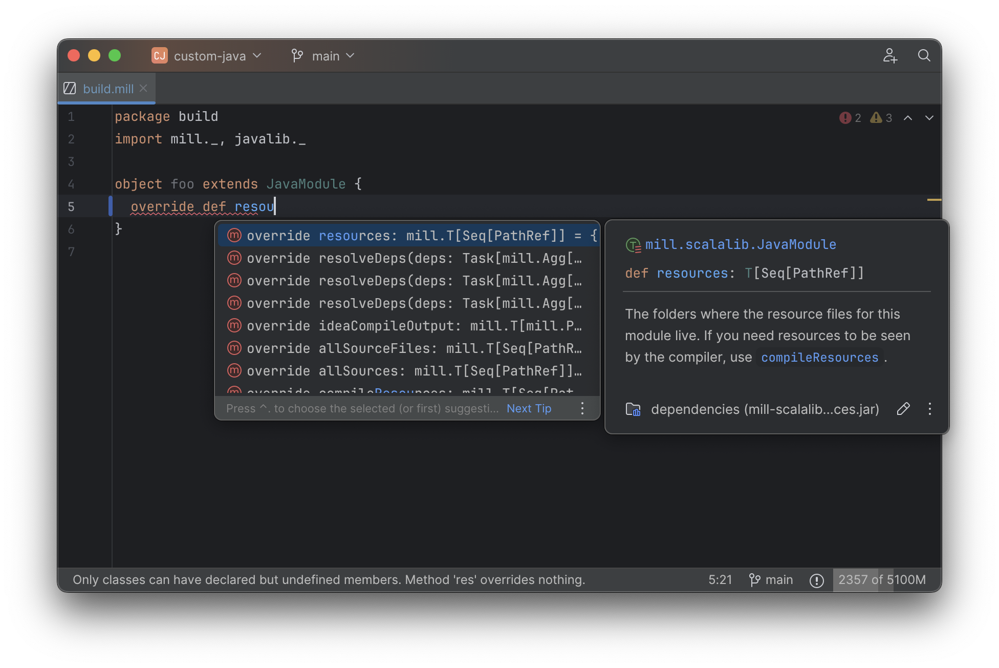

Comparing Mill vs Gradle: Programmable Builds
Gradle is a popular open source build tool in the Java and JVM ecosystem, second only to Maven. Gradle’s core API is built around programmable configuration files written in Groovy or Kotlin: this provides a lot of flexibility, but also a lot of complexity, sparking complaints about Gradle being complicated and hard to maintain.
Mill defaults to a declarative configuration syntax, but when you do need to extend your build with custom logic Mill’s programmable configuration syntax allows you to do so. Unlike Gradle, Mill builds upon the idea of object-oriented builds which provides a much more familiar programming API with much better IDE support than Gradle or other build tools have been able to do.
This article will discuss some of the problems with Gradle, and how Mill is able to improve upon the Gradle’s design to provide programmatic builds without the complexity or confusion.
Extending Gradle
Most real projects require some kind of ad-hoc build customizations: you may be pre-processing static assets for web deployment, embedding build metadata for production debugging, or generating reports for security scanning. For example, consider the following requirement:
Count the lines of code in this project and include this as a resource for use at runtime as a
line-count.txtfile
This is a bit of an artificial requirement, but it is representative of the many things that real projects need to do in their build. Doing this in Gradle looks something like this:
tasks.register("generateLineCount") {
val sourceDirs = listOf("src/main/java")
val outputDir = layout.buildDirectory.dir("generated-resources")
val outputFile = outputDir.get().file("line-count.txt")
inputs.files(fileTree("src/main"))
outputs.file(outputFile)
doLast {
var totalLines = 0
sourceDirs.map(::file).filter { it.exists() }.forEach { srcDir ->
srcDir.walkTopDown()
.filter { it.isFile && it.extension in listOf("java") }
.forEach { file ->
totalLines += file.readLines().size
}
}
outputFile.asFile.writeText(totalLines.toString())
println("Generated line-count.txt with $totalLines lines")
}
}
tasks.named("processResources") {
dependsOn("generateLineCount")
from(layout.buildDirectory.dir("generated-resources"))
}This is a very basic build customization, but you may already notice some issues.
Gradle Build Plugin APIs
Firstly, the Gradle "config as code" may be using Kotlin, doesn’t actually look like Kotlin code you are writing day-to-day. In particular, there’s a non-trivial "build plugin API" you need to learn to write this:
-
task.named&task.register -
dependsOn -
inputs.files&outputs.file -
doLast(or should we usedoFirst?)
Furthermore, the stringly-typed values add to the potential for error:
-
"generateLineCount" -
"generated-resources" -
"processResources" -
"src/main/java" -
"src/main"
In fact, there is even a bug in the above Gradle config that will cause the build to be non-deterministically slower sometimes, but not other times. Can you spot it? ChatGPT couldn’t! (Click the footnote to see the answer [1])
The difficulty of catching these issues e.g. during code review illustrates how difficult it is to write "correct" Gradle config: if even the simplest hello-world customization results in impossible-to-find heisenbugs bugs slowing things down, how many bugs will there be in any more-complex real-world customization or plugin? It’s no wonder then than real-world builds using Gradle or other tools often end up being inexplicably slow and flaky.
The end result is that although you may know Kotlin as a compiled language, you will likely be unfamiliar with Gradle’s flavor of Kotlin. Counting the lines of code in a folder is something any Kotlin programmer can do with their eyes closed, but properly wiring it into a Gradle build can be a tricky and error-prone affair. Lastly, although the JVM platform is famous for having excellent IDE support, when working with Gradle your IDE will likely not be as useful as you would like. We’ll dive into what that means in the next section.
Gradle IDE Support
While JVM application codebases universally have excellent IDE support, build tools are usually
not nearly as well-supported. For example, consider the snippet below where we are using Gradle to
configure the javac compiler options. In the example below, we can see that IntelliJ is able to
identify that compileArgs exists and has the type List<String>:

But if you try to jump to definition or find out anything else about it you hit a wall. The IDE is able to bring you to the getter and setter, but it isn’t able to tell you where the value is coming from, how it is computed, or where it is used:

Often working with build configurations feels like constantly hitting a wall: if you
don’t have options.compilerArgs memorized in your head, there is literally nothing
you can do in your IDE to figure out what it is or what it is used for. That leaves
you Googling for answers or digging through stackoverflow, which can be a frustrating
experience. Even modern AI assistants like ChatGPT or Gemini often hallucinate and get
things wrong.
Notably, this is in stark contrast to the experience working with typical Java/Scala/Kotlin code in an IDE like IntelliJ, where your IDE is amazingly helpful at tracing through method calls and class hierarchies. Even without documentation, stackoverflow, or AI coding assistants, in typical JVM projects you are easily able to trace through the code and figure out exactly how it works and what it’s doing.
Although this example is using Gradle’s un-typed Groovy syntax, the experience using Gradle’s typed Kotlin syntax is largely the same. The problem isn’t unique to Gradle, isn’t unique to Groovy or Kotlin, and isn’t unique to IntelliJ. The problem is the style of code that most build tools require they be configured with.
Global Mutable Variables
The fundamental problem with build tools like Gradle is that the entire configuration system
is based around global mutable variables. We can see a hint of that in the IDE screenshot
above, where jumping to compilerArgs brings us to a getter and setter:
public List<String> getCompilerArgs() {
return this.compilerArgs;
}
public void setCompilerArgs(List<String> compilerArgs) {
this.compilerArgs = compilerArgs;
}The Groovy or Kotlin code you write does not actually perform the build, but instead is just setting up some global mutable data structure that is used to configure the real build engine that runs later. IDEs are generally not good at understanding logic around global mutable variables, and just because the global mutable variable is wrapped in a getter and setter does not make it any less global or any less mutable!
This issue with global mutable variables is at the core of why IDEs have trouble with build tools. It doesn’t matter what IDE you are using, and it doesn’t matter what language the build tool is configured with. If the build tool is build on top of a big list of global mutable variables - as is the case for Gradle and most other programmable build tools - then inevitably the user is going to have a poor IDE experience trying to navigate it.
Extending Mill
Although Mill also has a programmable build definition syntax, it takes a very different approach to Gradle, with a very different user and IDE experience:
-
While most build tools require users to write plugins against a custom plugin API, Mill allows you to customize your build using object-oriented methods, classes, and overrides
-
While most build tools are configured using global mutable variables, Mill builds are built on top of classes and methods, providing an API much more familiar to users and IDEs
We’ll discuss these two ideas more in the examples below.
Simple Custom Tasks
Consider the following minimal Mill build with a Java module foo. It contains no custom
configuration, and so inherits all the defaults from mill.javalib.JavaModule: default
source folder layout, default assembly configuration, default compiler flags, and so on.
This convention over configuration is a philosophy that Mill inherited from Maven and
other JVM build tools:
package build
import mill.*, javalib.*
object foo extends JavaModule {
}> mill compile
Compiling 1 Java source...Mill "modules" are just vanilla JVM objects inheriting from a *Module class, and Mill
"tasks" are just vanilla JVM methods that return a Task<T> or Task[T] value.
So if we want to add a custom task to this example, perhaps "counting the lines of
code and writing it to a resource file" as we did above with Gradle, this is as
simple as defining a method. An implementation of this is shown below
package build
import mill.*, javalib.*
object foo extends JavaModule {
/** Total number of lines in module source files */
def lineCount = Task {
allSourceFiles().map(f => os.read.lines(f.path).size).sum
}
}Some notes on this:
-
Mill’s programmable
build.millfiles use Scala syntax, so a method is defined usingdefe.g.def lineCount = Task { … }. -
The body of
Taskperforms the action we want, and can depend on other tasks such asallSourceFiles()
Once we define a new task, we can immediately begin using it in our build.
lineCount is not used by any existing JavaModule tasks, but we can still
show its value via the Mill command line to evaluate it, or inspect its metadata:
> ./mill show foo.lineCount
17
> ./mill inspect foo.lineCount
foo.lineCount(build.mill:4)
Total number of lines in module source files
Inputs:
foo.allSourceFilesNote that as lineCount is a Task, we get automatic caching, invalidation, and
parallelization: these are things that every Task gets for free, without the
developer needing to do anything. And although we wrote the lineCount logic in the main
build.mill file for this example, if it grows complex enough to get messy it is
easy to move it to your own custom plugins
Overriding Tasks
We have defined our custom lineCount task, but we still need to write it to a JVM
resource file so the value can be used at runtime. In Mill everything is a Task and
every task is a method, and so JVM resources defined by def resources are no different.
And like any other method, the way we customize it is by overrideing it, as shown below:
package build
import mill.*, javalib.*
object foo extends JavaModule {
/** Total number of lines in module source files */
def lineCount = Task {
allSourceFiles().map(f => os.read.lines(f.path).size).sum
}
/** Generate resources using lineCount of sources */
override def resources = Task {
os.write(Task.dest / "line-count.txt", "" + lineCount())
super.resources() ++ Seq(PathRef(Task.dest))
}
}Some notes:
-
Our
def resourcesoverrides the existingresourcesmethod inherited fromJavaModule, the downstream tasks automatically now use the new override instead, similar to any Java method overrides. -
We append the new resource entry to its prior value
super.resources()that references theresources/folder on disk, so the resource folder on disk remains available -
Task.destis a path in theout/folder unique to eachTask, so it can write files there without worrying about colliding with files written by other tasks
This results in a small addition to the Mill build graph as shown below, with our
two custom tasks def lintCount and def resources spliced in among existing Mill tasks:
Now if we call mill foo.run, it will automatically pick up the new
resources including the generated line-count.txt file and make it available to
the application code to use e.g. to print it out at runtime:
> mill foo.run
Line Count: 18Nobody actually wants to count the lines of code in their program and write it in a resource file,
but this example demonstrates how easy it is to extend your Mill module with custom logic in its
own little pipeline. Where Gradle’s programmatic configuration is built on top of global mutable
variables, Mill is instead built on classes, extends, method defs and calls, and overrides.
These behave exactly as you would expect any object-oriented program to work, so you already
know how Mill behaves even if you’ve never touched a Mill build before, and will very likely
get your Mill customizations right the first time without issue.
Mill IDE Support
One area that Mill does better than Gradle is in providing a seamless IDE
experience. Working with Mill builds in IntelliJ or VSCode, you get the full power of
your IDE to autocomplete, peek at docs, browse signatures, and otherwise navigate
around your build system. For example, when writing our override def resources above,
we get IDE assistance in auto-completing the def along with pop-up documentation about
what each method does so we can decide which one we want to override:

The big difference with Mill is that rather than building on global mutable variables, Mill is
built on top of classes and methods like any other JVM codebase. While IDEs struggle
with global variables, they are very good at navigating classes and methods!
For example, the equivalent to the Gradle compilerArgs setting we looked at earlier
is Mill’s def javacOptions method. But rather than being a global mutable variable
that gets set, def javacOptions is a method override, something that IntelliJ is extremely
capable and navigating, e.g. it can show you where the method you are overriding was defined,
where

IntelliJ can jump to any of the overridden defs quickly and precisely, so you can
see what value was there before we overrode it:

And because tasks in Mill are just normal methods, IntelliJ is
able to find usages, showing you where the task is used. Below, we can see the method
call in the def compile task, which uses javacOptions() along with a number of other tasks:

From there, if you are curious about any of the other tasks used alongside javacOptions, it’s
easy for you to pull up their documentation, jump to their
definition, or find their usages. For example we can pull up the docs of
compileClasspath() below, jump to its implementation, and continue
interactively exploring your build logic from there:

Unlike most other build tools, Mill build pipelines can be explored interactively in your IDE. If you do not know what something does, it’s documentation, definition, or usages is always one click away in IntelliJ or VSCode. This isn’t a new experience for Java developers, as it is what you experience every day working in your application code! But Mill brings that same polished experience to your build system - traditionally something that has been opaque and hard to understand - and does so in a way that no other build tool does. And this is possible because Mill builds avoid the global mutable variables common in other build tools, in favor of configuring your build via classes and methods that are familiar to both users and to IDEs.
Mill’s programmable configurable has a lot of improvements over programmable build tools like Gradle, but it begs the question: why can’t other build tools improve their ease of extensibility or IDE support as well? It turns out that other tools have been working on improving these things - for decades - but Mill does have some secret sauce that makes providing this experience in Mill much easier than providing it in any other build tool.
Templated Graph Computations
All build tools are complex, because the requirements of building any non-trivial real-world project are complex. One big source of build tool complexity is that users need some way to define templated graph-computations when setting up their build pipelines.
-
Graph as the data structure necessary to order and parallelize steps in your build: what build step needs to run first, what runs later, what can run in parallel and what cannot
-
Computations as
.classfiles and.jarfiles don’t make themselves, and someone in Java or Groovy or Kotlin or Bash needs to specify how each step’s outputs are made -
Templated as different modules in a build are often very similar, with similar pipelines, but will also have their differences and idiosyncrasies unique to each module
For example, even a simplified three-module Java build pipeline may look like this, with
each module having its own sources and compile and assembly tasks that form a graph,
and each module looking similar but not quite the same (e.g. foo.classPath has no upstream
module, but bar.classPath does)
Most build tools provide ad-hoc config formats (Maven’s XML) or programmable builder APIs (e.g. Gradle’s Groovy/Kotlin) to satisfy this need. But fundamentally, defining an API for templated graph-computations is non-trivial, so it is not surprising the APIs and to do so can get complicated.
Although the need to define templated graph computations is universal, Mill has one unique insight in how it can be done more easily. It turns out that everyone has a standard way they’ve been writing templated graph computations for decades, they just called it Object-Oriented Programming
Object-Oriented Builds
Mill has the same requirement of defining templated graph-computations, but rather than inventing a bespoke programming, configuration and plugin model to do so, Mill builds upon what everyone already knows:
-
Methods provide a way of defining discrete build steps that perform some necessary action in your build
-
The Call Graph between methods provides the build graph, where which method call which other methods defines the incoming edges of that node in the graph
-
Classes provide the templating, where you can define a set of methods calling each other, and instantiate those call graphs more than once in different parts of your build
-
Overrides and Subclasses provide customization: when a particular instance or sub-class needs a different implementation of one-or-more build steps, you can override the respective methods to customize the build call graph to your liking
Thus, when you see a Mill build configured as such, with an object extending a class:
package build
import mill.*, javalib.*
object foo extends JavaModule {
}This is not some special syntax, but is literally defining an object named foo
inheriting from the class JavaModule. Like any other inheritance, this picks up
the methods and method call graph of JavaModule (slightly simplified below)
And when you add additional tasks by defining methods using def, or override tasks
and call super:
package build
import mill.*, javalib.*
object foo extends JavaModule {
/** Total number of lines in module source files */
def lineCount = Task {
allSourceFiles().map(f => os.read.lines(f.path).size).sum
}
/** Generate resources using lineCount of sources */
override def resources = Task {
os.write(Task.dest / "line-count.txt", "" + lineCount())
super.resources() ++ Seq(PathRef(Task.dest))
}
}You as a Java programmer already know how these changes affect the build graph, by splicing
in the new method foo.lineCount, replacing foo.resources with a new method body, and
calling foo.super.resources:
If we want to re-use your build pipeline customizations, it as simple as turning the
singleton object foo into a class MyJavaModule (called trait MyJavaModule in
Mill’s Scala syntax), and it can be inherited by object foo and object bar to
share the configuration:
package build
import mill.*, javalib.*
object foo extends MyJavaModule
object bar extends MyJavaModule
trait MyJavaModule extends JavaModule {
/** Total number of lines in module source files */
def lineCount = Task {
allSourceFiles().map(f => os.read.lines(f.path).size).sum
}
/** Generate resources using lineCount of sources */
override def resources = Task {
os.write(Task.dest / "line-count.txt", "" + lineCount())
super.resources() ++ Seq(PathRef(Task.dest))
}
}If we want to further customize either of those modules, we can override
one or more of the inherited methods, either directly on object foo or object bar,
or on a subclass extending MyJavaModule that we can then re-use. And if we want
to publish our customizations for others to use in their own projects,
we can publish
MyJavaModule to Maven Central for others to
import into their build.
Mill’s usage of methods, classes, and overrides is also what powers the IDE support
discussed earlier on this page. IDEs like IntelliJ or VSCode are uniquely adept at
working with object-oriented JVM codebases full of methods and classes, and so
they can help you navigate and understand your Mill build pipelines just as easily
as any application codebase. And the simplicity of this extension model is what
allows Mill developers to avoid making mistakes aroun caching or parallelism when setting
up their builds or publishing plugins, which ultimately is what gives Mill builds great
performance without ever needing to clean.
Conclusion
Programmable build tools in the past have a reputation for complexity, and for good reason: earlier in this article we discussed how Extending Gradle is incredibly error prone and easy to get wrong, and it’s not the only build tool that’s like that. "Don’t touch the build config if you can at all avoid doing so" has been a best practice for decades, and justifiably so given how challenging traditional build tools are to program correctly.
But although superficially Mill’s programmable build.mill syntax looks similar to Gradle’s
build.gradle or build.gradle.kts, under the hood it works very differently. Where
Gradle works via a custom DSL that gets and sets global mutable variables that both humans
and IDEs have trouble analyzing, programming a Mill build feels like programming any JVM
application: with classes, methods, and first-class IDE support. With Mill, your build
system is no longer such an impenetrable black box, and instead becomes something that
any JVM developer can safely customize to the needs and requirements of the project.
If you have ever worked with a Gradle build you found it opaque and confusing, I encourage you to give Mill a try!
inputs.files is depending on src/main, when it only really needs src/main/java. That means that changes to src/main/resources or src/main/templates will cause the task redundantly re-compute, making your build slower than necessary. If the bug was the other way - rather than depending on too large a folder instead depending on too small a folder - it would instead cause flakiness where generateLineCount would sometimes not run when it needs to.